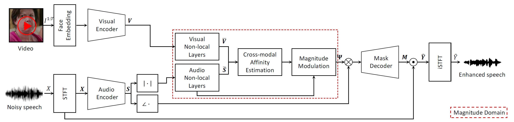
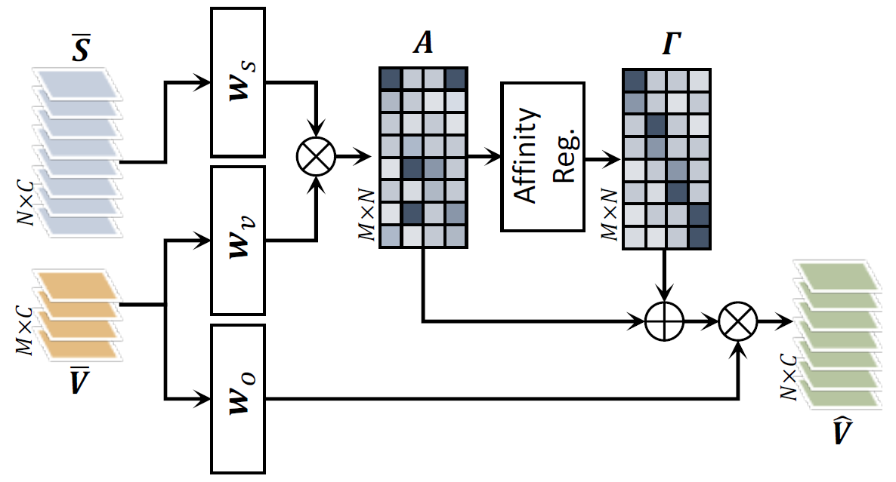
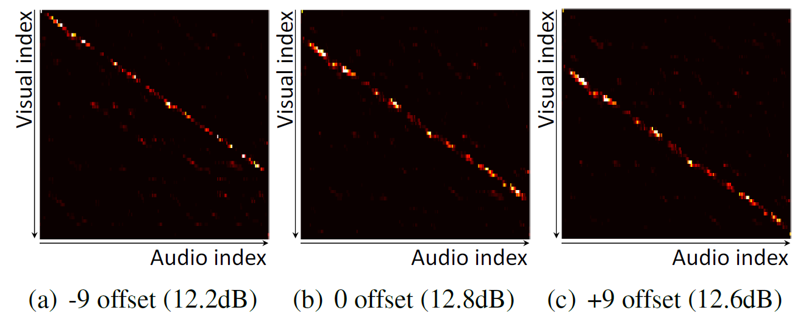

✲ equal contribution
♱ co-corresponding authors
In this paper, we address the problem of separating individual speech signals from videos using audio-visual neural processing. Most conventional approaches utilize frame-wise matching criteria to extract shared information between co-occurring audio and video. Thus, their performance heavily depends on the accuracy of audio-visual synchronization and the effectiveness of their representations. To overcome the frame discontinuity problem between two modalities due to transmission delay mismatch or jitter, we propose a cross-modal affinity network (CaffNet) that learns global correspondence as well as locally-varying affinities between audio and visual streams. Given that the global term provides stability over a temporal sequence at the utterance-level, this resolves the label permutation problem characterized by inconsistent assignments. By extending the proposed cross-modal affinity on the complex network, we further improve the separation performance in the complex spectral domain. Experimental results verify that the proposed methods outperform conventional ones on various datasets, demonstrating their advantages in real-world scenarios.

Overall network configuration: (1) encoding individual audio and visual features; (2) learning cross-modal affinity; (3) predicting spectrogram soft mask $\mathbf{M}$ to reconstruct target speech $\mathbf{\hat{Y}}$. Red dotted region means the magnitude operation processing.


Intuitively, when input speech contains only one voice, affinity matrix in (a) is obtained by matching a target face and speech in CaffNet. In practice, when input speech is mixture sound, initial affinity is calculated as shown in (b) containing erroneous matching results. Final affinity in (c) is estimated with the help of affinity regularization.
|
J. Lee*, S.-W. Chung*, S. Kim, H.-G. Kang, K. Sohn Looking into Your Speech: Learning Cross-modal Affinity for Audio-visual Speech Separation [Paper] [Code] |
@inproceedings{lee2021looking,
title={Looking into Your Speech: Learning Cross-modal Affinity for Audio-visual Speech Separation},
author={Lee, Jiyoung and Chung, Soo-Whan and Kim, Sunok and Kang, Hong-Goo and Sohn, Kwanghoon},
booktitle={Proceedings of the IEEE/CVF Conference on Computer Vision and Pattern Recognition (CVPR)},
year={2021}
}